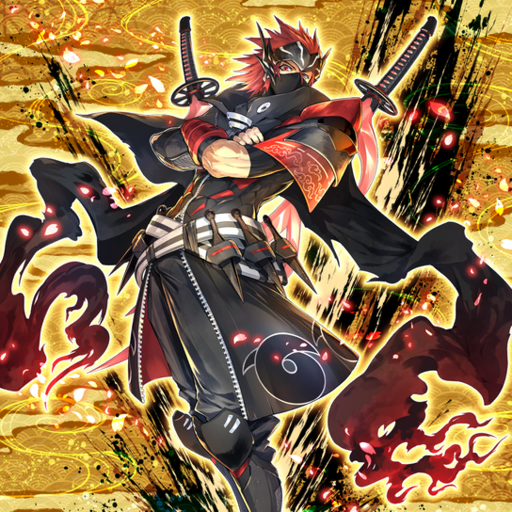
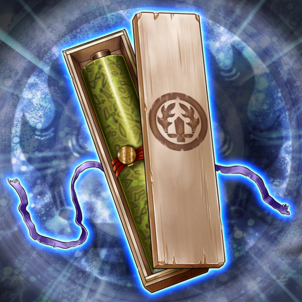
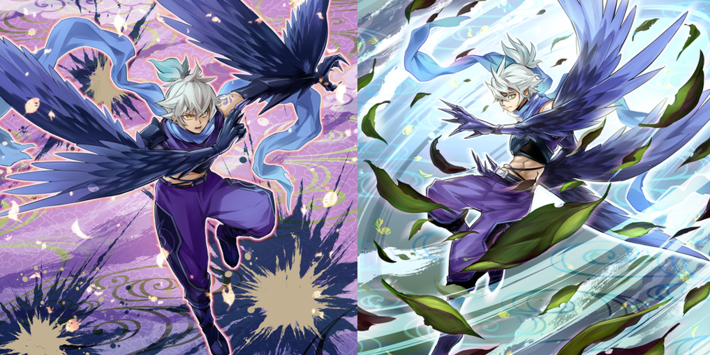
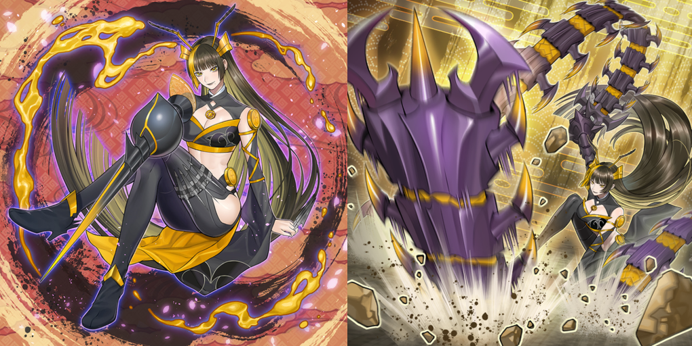
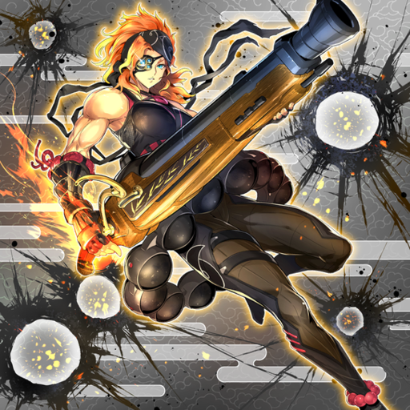
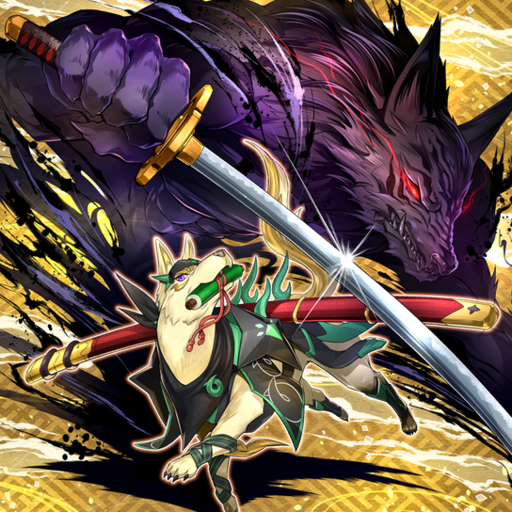
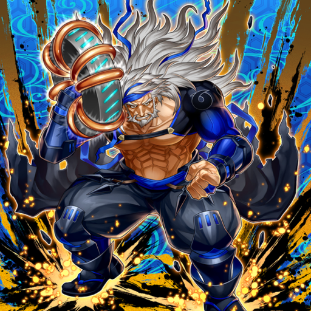
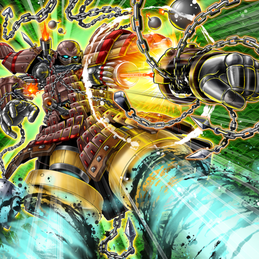
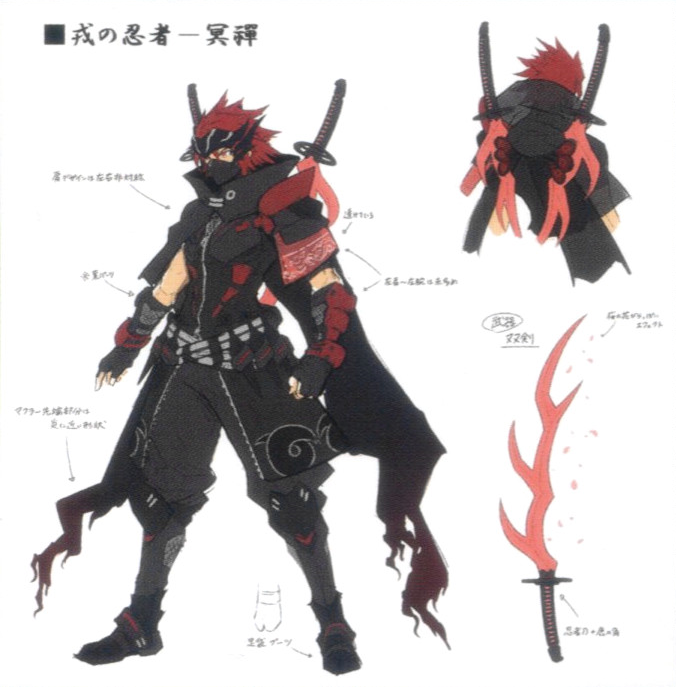

The head who brought together the special ability ninja. He himself also had a special ability, but its nature was not revealed to anyone.

A record left behind for future generations. Only a fraction of the details of the special ability ninja in it could be verified.

Special Ability Ninjitsu Arts He had the special ability of possessing bird wings. Specialized in martial arts and ninjutsu that made use of speed.

Special Ability Ninja Weapons A demi-human who possessed traits of bees. By making use of her insect-like physical strength and sharp senses, she could freely manipulate her concealed weapons.

"Kagero the Cannon Ninja" A kunoichi with the special ability to create flames. She upgraded a cannon obtained from the continent, and was proficient in long-range combat.

"Baku the Beast Ninja" A ninja-dog that possessed high intellect. Cut enemies in half by swinging a longsword with its special ability that let it manipulate shadows.

"Jioh the Gravity Ninja" An elder ninja who could manipulate magnetism. When he swung around his electromagnetic shuriken, it was almost as if it had a mind of its own.

"Yaguramaru the Armor Ninja" A ninja with a strange appearance who remodeled his entire body with mechanical contraptions. He shone the most in one-versus-many in both offense and defense, and the moment he was introduced to the battlefield, he provided immense military power.

